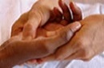

Thaise massages maken deel uit van de oudste verzorgingstechnieken ter wereld, ze bestrijden pijn , evacueren stress en geven een gevoel van welzijn.
- Traditionele Thaise massage:
Aan de hand van een traditionele massage zullen de stressknopen gemasseerd worden met een helende aanraking en gestimuleerd worden om de pijn en de stramheid te verzachten. Zelfs al hebt u geen last van zulke pijnen, dankzij deze massage zullen uw spieren zich volledig ontspannen en een gevoel van welbevinden zal uw lichaam verwarmen. |
- Olie Massage:
Een massage met aangepaste oliën die tot doel heeft u van bij de eerste momenten te ontspannen. Pijnen worden zo op zachte manier bestreden. De olie dringt de huid binnen, vermindert de spierspanning en voedt en versoepelt de huid. |
- De volgende type massages worden aan jullie voorgesteld:
- Massage van het hoofd en gezicht.
- Massage van de armen en handen.
- Massage van de benen en voeten.
- Massage van het lichaam.

 Home
Home De massages
De massages Contact
Contact Dienstregelingen/Prijzen
Dienstregelingen/Prijzen Adres
Adres Français
Français